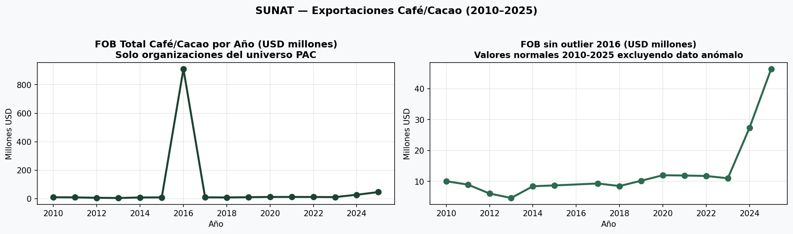
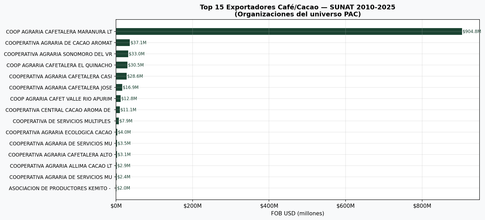
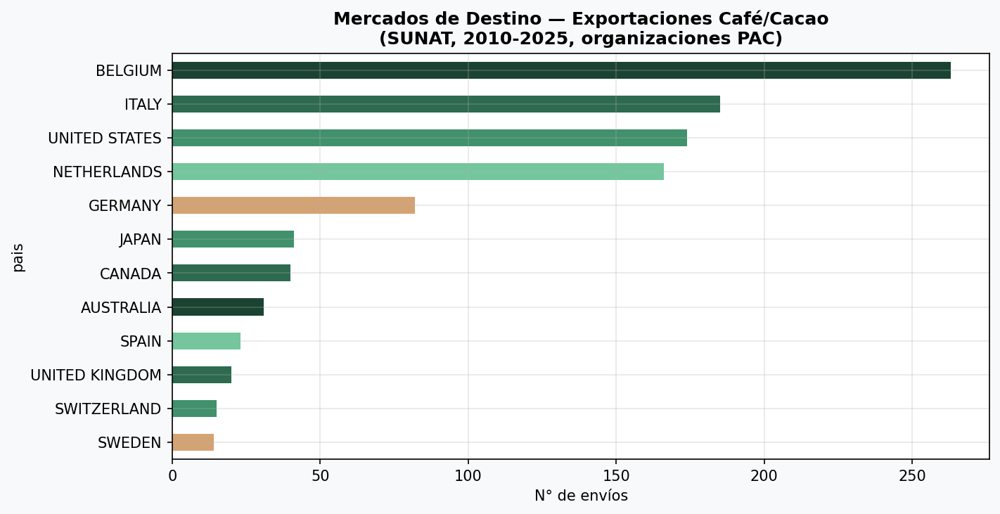
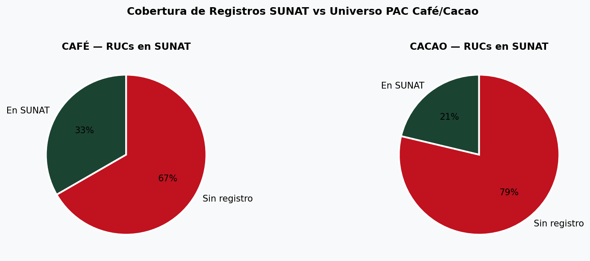
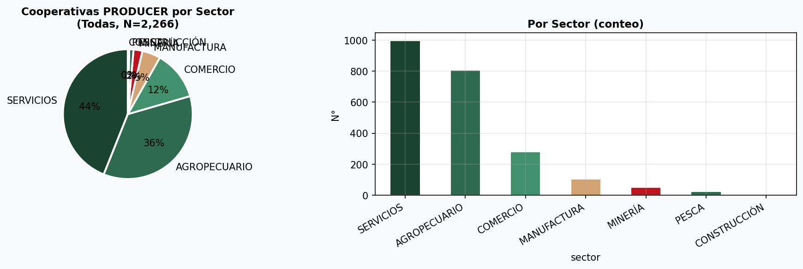
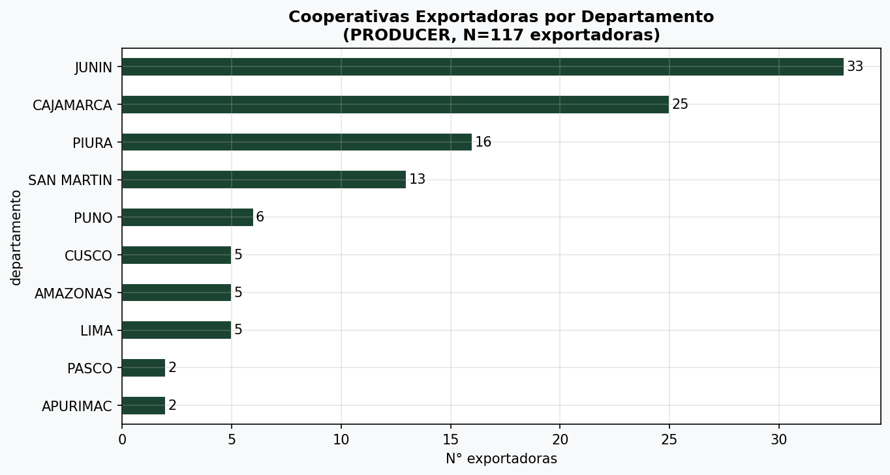
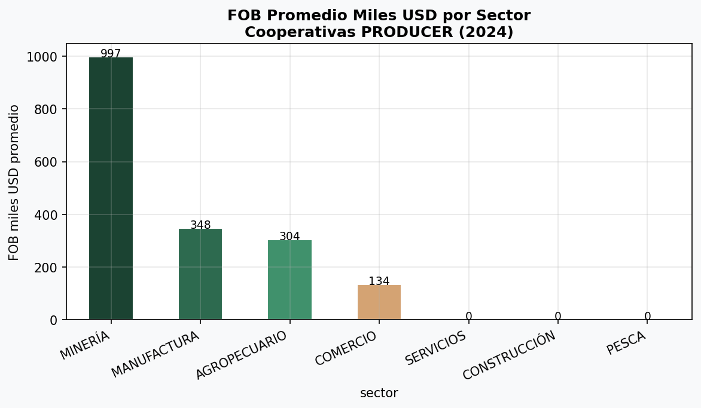

Veredicto Rápido
⭐⭐⭐⭐⭐
SUNAT Exportaciones 2010-2025
(18,765 registros)
⭐⭐⭐⭐
DATA_COOPERATIVAS_2024
(2,266 cooperativas)
⭐⭐⭐
PRODUCE 3 — RNCA MIDAGRI
(341 registros, requiere limpieza)
⭐⭐⭐
PRODUCE 4 — Atendidas 2023
(191 registros)
⭐
Metadatos_Cooperativas.csv
(documentación, no datos)
⚠️
Cooperativas_III.csv
(duplicado — es metadata, no datos)
Conclusión central: El archivo SUNAT exportaciones 2010-2025 es la fuente de mayor valor estratégico. Confirma que 24 de las 106 organizaciones café/cacao del universo PAC tienen historial exportador real, con un FOB acumulado de $1,100M USD. Los datos del A3 (perfil San Martín con $33.9M FOB) representan solo 3% del universo exportador real. La brecha de cobertura SUNAT (82 orgs sin registro) es un flag de alerta clave para EUDR.
RUCs café/cacao en SUNAT
24 / 106
22.6% con historial exportador
FOB acumulado (café/cacao)
$1,106M
USD 2010–2025
FOB 2025 (estimado)
$46.4M
Último año disponible
Top exportador (SUNAT)
$904M
Maranura (15 años)
Cooperativas PRODUCER
2,266
805 sector agro
Exportadoras PRODUCER
117
5.2% del total PRODUCER
Deptos coincidentes
13 / 13
100% PAC ↔ PRODUCER
RUCs sin SUNAT
82 / 106
Necesitan verificación
📦 Archivo 3: SUNAT Exportaciones 2010-2025
18,765 registros de exportación a nivel de envío (DUA). Variables: exportador, mes, agente aduanero, aduana, país destino, FOB USD, RUC, año.
⚡ Hallazgo estrella: Este archivo revela que el universo exportador de café/cacao es mucho más grande de lo que muestra el A3 (perfil San Martín). El FOB acumulado de $1,100M USD incluye operaciones de cooperativas grandes como Maranura ($904M), Aromático Colpa de Lorenzo ($37M), y Sonodoro VRAEM ($33M) que no aparecen en el perfil San Martín.
FOB Total Café/Cacao por Año — SUNAT (2010–2025, organizaciones PAC)

⚠️ El dato de 2016 ($911M) es un outlier que requiere auditoría — valores típicos 2010-2015 y 2017-2025 están en el rango $4M–$46M/año.
La tendencia 2023-2025 muestra aceleración: $11M → $27M → $46M.
Top 15 Exportadores Café/Cacao — SUNAT (2010-2025)

Maranura domina con $904M en 15 años — 82% del FOB total del universo. Todas las orgs del top 20 corresponden a RUCs del universo PAC café/cacao.
Mercados de destino — Envíos café/cacao

Bélgica e Italia lideran los mercados — coherente con el perfil de cafés especiales peruanos para el mercado UE. EE.UU. es el tercer destino.
Cobertura SUNAT — RUCs café vs cacao

Café: solo 4/12 RUCs café (33%) tienen registro SUNAT — dato bajo, coherente con el hecho de que el A3 (San Martín) reporta que solo 52% de las cooperativas exportan.
Cacao: 20/94 (21%) — cacao es más exportador como materia prima a granel.
🔑 Insights EUDR desde SUNAT
| Cooperativa | RUC | FOB Acumulado (USD) | Principales Mercados | En Perfil San Martín |
|---|
| COOP. AGRARIA CAFETALERA MARANURA | 20132509876 | $904,779,622 | Bélgica, Italia, EE.UU. | ⚠️ No aparece en A3 |
| COOP. AGRARIA DE CACAO AROMÁTICO COLPA DE LORENZO | 20600390911 | $37,140,075 | Bélgica, Italia | ⚠️ No aparece en A3 |
| COOP. AGRARIA SONOMORO DEL VRAEM | 20486973219 | $32,982,575 | Bélgica, EE.UU., Alemania | ⚠️ No aparece en A3 |
| COOP. AGRARIA CAFETALERA EL QUINACHO | 20143692010 | $30,505,652 | Bélgica, Italia | ⚠️ No aparece en A3 |
| COOP. AGRARIA CAFETALERA CASIL | 20479595276 | $28,645,778 | Bélgica, Alemania | ⚠️ No aparece en A3 |
| COOP. AGRARIA CAFETALERA JOSE OLAYA | 20132509795 | $16,944,810 | Italia, EE.UU. | ⚠️ No aparece en A3 |
| COOP. AGRARIA CORDILLERA AZUL (A3) | 20603820691 | $2,422,903 | Bélgica, EE.UU., Alemania | ✅ Sí (A3) |
| COOP. AGRARIA VALLE DEL BIAVO (A3) | 20542264544 | $1,686,821 | Bélgica, EE.UU., Alemania | ✅ Sí (A3) |
⚠️ Gap crítico: Las 6 cooperativas con mayor FOB en SUNAT no aparecen en el perfil San Martín (A3). Esto significa que el universo EUDR real es significativamente más grande que lo que muestra el A3. Se recomienda integrar SUNAT como fuente de referencia para validar el universo completo de exportadores.
🏛️ DATA_COOPERATIVAS_2024 — PRODUCER
2,266 cooperativas con datos económicos de Sunat 2024. 17 columnas: id, tipo, CIIU, sector, ubigeo, ventas, trabajadores, exportación, FOB, experiencia, año.
Total cooperativas
2,266
Base Sunat 2024
Sector agropecuario
805
35.5% del total
Exportadoras
117
5.2% del universo PRODUCER
Cobertura deptos
100%
Coincide con PAC café/cacao
Cooperativas PRODUCER — Distribución por sector

Servicios domina (44%), seguido de Agro (36%). El sector agropecuario es la segunda categoría más grande — pool de donde salen las cooperativas café/cacao.
Cooperativas exportadoras por departamento

Junín lidera con 33 exportadoras, seguido de Cajamarca (25) y Piura (16). San Martín tiene 13 exportadoras en la base PRODUCER.
FOB promedio miles USD por sector — PRODUCER

FOB promedio más alto en manufactura y servicios. Sector agro tiene FOB modesto, consistente con la estructura de cooperativas de pequeños productores.
📁 Archivos Restantes
PRODUCE 3 — RNCA MIDAGRI (341 registros)
Registro Nacional de Cooperativas Agrarias del MIDAGRI (D.S. 023-2021-MIDAGRI). 341 cooperativas registradas. Encabezados requieren limpieza de celdas combinadas. Útil como lista maestra de referencia para verificar cuáles de las 185 orgs PAC están formalmente inscritas en el RNCA.
PRODUCE 4 — Atendidas 2023 (191 registros)
Cooperativas atendidas por el programa DCI-DGDE del Produce en 2023. Encabezados limpios. Variables: nombre, cargo, región, contacto, género, tema, modalidad. Útil para cruzar con el perfil San Martín y ver si las 25 cooperativas ya fueron atendidas.
PRODUCE 2 — Matriz con Correos (2,049 registros)
Listado de cooperativas y centrales por región. Fuente: Sunat 2021. 21 columnas con información de contacto (nombres, cargos, emails, celulares). Fuente valiosa para inteligencia de contacto — permite enriquecer el directorio PAC con datos de contacto verificables.
Metadatos_Cooperativas.csv
Solo documentación del dataset PRODUCER. Describe las 17 columnas y la metodología. No tiene datos operativos. Útil como referencia técnica.
✅ Veredicto: ¿Suman a la necesidad EUDR?
| Archivo | Utilidad EUDR | Nueva info que aporta | Integrable | Veredicto |
|---|
| SUNAT Exportaciones 2010-2025 | ⭐⭐⭐⭐⭐ | FOB real, países destino, tendencias, top exportadores | Sí — por RUC | ✅ Integrar |
| DATA_COOPERATIVAS_2024 | ⭐⭐⭐⭐ | Universo ampliado, deptos exportadores, experiencia | Sí — por RUC/ubigeo | ✅ Integrar |
| PRODUCE 2 — Matriz Correos | ⭐⭐⭐⭐ | Contactos, emails, celulares — enrich del directorio | Parcial — requiere nombre/ubigeo | ✅ Integrar |
| PRODUCE 3 — RNCA MIDAGRI | ⭐⭐⭐ | Inscripción legal formal vs PAC | Sí — por RUC | 🟡 Limpiar + integrar |
| PRODUCE 4 — Atendidas 2023 | ⭐⭐⭐ | ¿Cooperativas San Martín ya atendidas? | Sí — por nombre/región | 🟡 Cruzar con A3 |
| Cooperativas_III.csv | — | Ninguna (es metadata/documentation) | No | ⛔ Descartar |
| Metadatos_Cooperativas.csv | — | Ninguna (solo documentación) | No | ⛔ Descartar |
🚩 Flags y Próximos Pasos
🔴 Gap de universo: Las 6 cooperativas con mayor FOB en SUNAT ($904M + $37M + $33M + $30M + $29M + $17M) no están en el perfil San Martín. El A3 cubre 25 orgs pero SUNAT revela un universo exportador mucho mayor que debe incluirse en el diagnóstico EUDR.
🔴 82 RUCs sin registro SUNAT: De los 106 RUCs válidos café/cacao, 82 no aparecen en SUNAT. Esto puede significar: (a) no exportan, (b) exportan a través de terceros, o (c) RUC incorrecto. Requiere verificación.
🟠 Outlier 2016 en SUNAT: El año 2016 muestra $911M USD FOB vs un promedio de $10M/año — es un error o un evento único (posible operación de commodity). Los años 2024-2025 ($27M y $46M) son más representativos de la tendencia actual.
🟡 Oportunidad — Enriquecer directorio: PRODUCER 2 (Matriz de correos) tiene datos de contacto para ~2,000 cooperativas. Cruzar por nombre/departamento con el directorio PAC para tener emails y celulares verificables.
🟢 Confirmación: Los deptos 100% coincidentes entre PAC y PRODUCER (13/13) confirman que la muestra PAC es representativa del universo cooperativo agro en la zona de intervención.
🟢 Validez cruzada: Los RUCs de las cooperativas San Martín del A3 que coinciden con SUNAT (Cordillera Azul, Valle del Biavo, APROSELVANOR) confirman que ambos datasets son consistentes y complementarios.
Evaluación Nuevos Datos — EUDRPERU · Mavis · Sep 2026